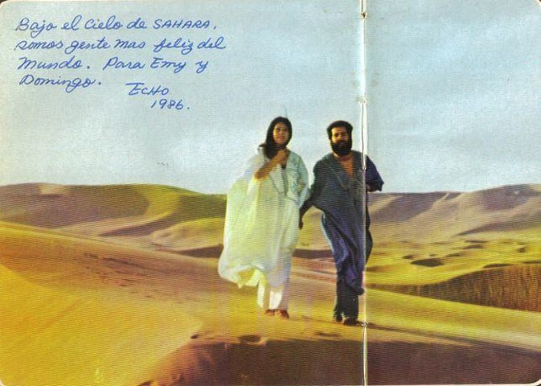

It's nice to share my experience here. Let's START!
MORE ABOUT ME
WHERE I'm FROM
Shanghai is my home and I grew up here. Perhaps it’s the city’s vibrant energy that has shaped my curiosity about everything around the world.
18 years of growth makes me love everything here and feel a little bored. The meaning of travel may be born in this that travelling can transition every long chapter in my life and allow me to take a rest in the hustle of city life and to be ready to start a new episode.

MORE ABOUT ME
Why I TRAVEL
When I was a child, or before I was sensible, my parents took me on trips to experience the wider world. I did not have my unique understanding of traveling and thought it was going out for fun superficially.
When I grew up, after reading "The Story of the Sahara" by San Mao三毛, a female writer from Taiwan, I had the impulse and obsession to visit a place for the first time in my life. It was also during my own journey to the Sahara that I felt the great solace brought by nature. Since then, I have gradually formed my own concept of travel. It doesn’t need to be too refined, it can be aimless wandering.